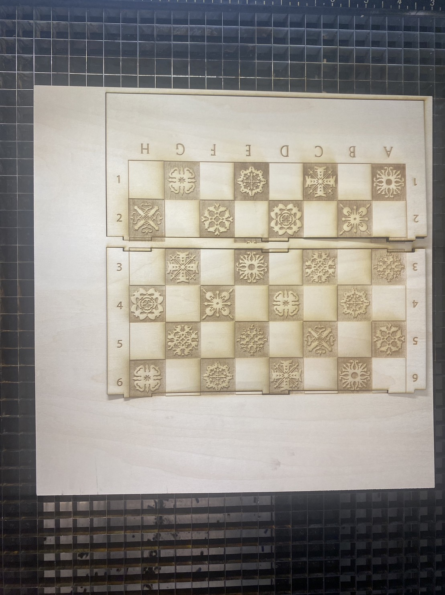

Final Result
Long story short, it's a real struggle finishing this seemingly easy project.
Techniques used: laser cutting, Rhino, 3D printing, press-fit, and incorporating stock parts.
Designing in CAD
Here is a rendering of the chess box design I did in Rhino. The wood-textured part will be laser cut from basswood and the pink part will be 3D printed with PLA filament.
For the chess board, I designed the engraving in Adobe Illustrator. The theme of this chess board is inspired by Game of Thrones, so I modify this GoT snowflake design to be the chess board pattern, representing the 10 houses in the story.
The chess box and holder structure that need to be laser cut are imported into Illustrator from Rhino, as highlighted in red in the picture below.
As much as I want to print this awesome GoT chess pieces design, unfortunately it's not feasible for this project. Printing all of the 32 chess pieces with this much detail will not be possible since I only have around 1 week of printing time. I considered scaling them down in exchange for faster printing time, however from my test print, the details of the model would be sacrificed too much as I could barely see the shape of the swords on the Iron Throne, and it would take lots of time to clean up all of the supports needed to print these pieces.
Therefore, I chose to print this spiral chess set as they can be printed without supports, and they are something that could not be manufactured by any other process other than 3D printing.
I measured the size of the magnets I purchased (2.8 mm in height and 5.9 mm in diameter), and did a few test prints to finally determine that the hole underneath each chess piece to be 3.2 mm in height and 7.8 mm in diameter to best fit the magnets. I then modified the models of chess pieces in Rhino, scaling down the original models to be 64% considering the size of my chess board/box design and the printing time required.
Laser cut the chess board and holder
To avoid waiting in the long line at the MILL (and laser cutter potentially not working), I took the laser cutter training and then did the laser cut parts in my office. The Epilog laser in the office has cameras on and it's easier to position the cut parts onto the materials.
Here are the settings I used. According to the training instructor, even though the printer preset settings set the power to be 100%, it is better to reduce the power to 90% or lower to prolong the life of the laser cutter. By proportionally reducing the speed, we can get similar results.
However, engraving the board this way makes the basswood piece easy to break, which I didn't foresee.
A real struggle this time with my 3D printer
For the box structure, the base took around 12.3 hours to print. I failed twice during the process. As it is a long print and I wanted to actually sleep at night, I paused the print thinking I could safely resume it in the morning. Sadly the printer failed me and refused to let me continue...and I had to start over again.
The lid took another 6-7 hours to print, it came out alright but sadly it did not fit my box structure well.

Printing all of the chess pieces was a lot more struggling that I had thought. I thought I could just print them all at once, but my first batch of 8 pawns came out like this...slaughtered and headless... :(
As I have limited special filament (purchased from Proto-pasta), I decided to print each piece one by one to prevent wasting materials on failed attempts. Each pawn took around 30 minutes to print (dynamic quality with 100% infill), and other pieces took around 40-50 minutes each. So printing all of the 32 chess pieces took me around 20 hours, not including the time waiting for the 3D printer to heat up, cleaning up the bed, leveling the bed, replacing filament, trouble-shooting, and all of the wasted time on my tragic failed prints.
One of my thanksgiving purchases was this 3D printer enclosure to reduce the noise, improve print stability, and to isolate accidental fire.
But there were still lots of issues throughout the entire 3D printing process. A few lessons learnt and some mysteries:
Putting them all together...almost
Attachment
The model files can be found here.
Sources
Here are the online resources & assets I used in this project:
Acknowledgement
Big thanks for Tsai-Feng for allowing me ample time to work on the 3D printer as we need to share one printer together, as well as the emotional support when the printer failed me again and again...